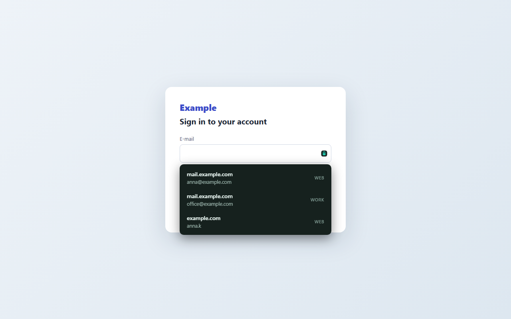
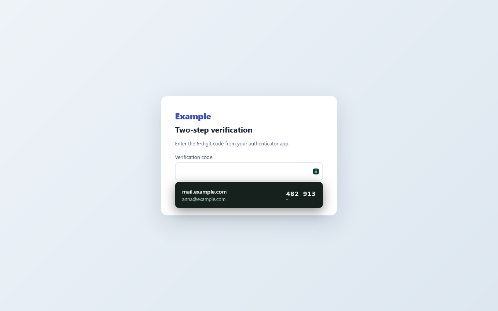

Free password manager and 2FA authenticator, in one vault that backs itself up.
Keyhold keeps your passwords, two-factor codes and important files such as recovery codes and SSH keys in one encrypted vault. It fills logins right under the field in Chrome, Edge and Firefox and in Android apps, and keeps your devices in step through your own Google Drive. No account, no subscription, no server of ours.
Free and open source (MIT). The browser extension for Chrome, Edge and Firefox comes with the Windows download.

One vault, one master password
Like KeePass: the master password opens the vault, and a printable recovery key opens it if the password is ever forgotten. Several vaults can live side by side, each with its own password.
Passwords and two-factor codes
Keeps logins and two-factor codes, like Google Authenticator, and shows the next code in the last seconds. Pin a code to a login or a site and it is offered right where it is needed. Types logins and codes into any window with Ctrl+Alt+K.
Browser extension
Fills logins and codes right under the field in Chrome, Edge and Firefox — only on the very site they belong to — and offers to save a new login once it worked. It works with the Keyhold app on the same computer, or on its own, opening your vault from your Google Drive with the master password.
On the phone
Your codes and logins on Android, filled into apps and browsers from the suggestion under the field. New logins are offered for saving and reach your computer through Drive.
Fingerprint and Windows Hello
Mark a bank login or a code and it is filled in only after your fingerprint on the phone or Windows Hello on the computer. Keyhold itself can open the same way.
Important files
Keeps files such as recovery codes and keys in the vault, and watches folders like .ssh, copying in every new or changed file — so a lost disk does not mean lost keys.
Backups
Every change is copied to the folders you choose and optionally to a server of your own, in seven copies from the latest to one about a year old — and, if you turn it on, to your own Google Drive.
Import and QR codes
Brings in logins and codes from browsers, Bitwarden, 1Password, KeePass, LastPass, Proton Pass, Aegis, 2FAS and others, and reads two-factor QR codes from the screen, an image or the phone’s camera, including the Google Authenticator export.

Private by design
The vault is encrypted with AES-256 on your device. Nothing is sent to the author — there is no Keyhold server, no account and no tracking. Read how Keyhold protects your data and the privacy policy.
Questions
Is Keyhold free?
Yes. Keyhold is free and open source under the MIT license, with no subscription, no ads and no account.
Where are my passwords stored?
In one encrypted file on your own devices, and — if you turn it on — in your own Google Drive, already encrypted. There is no Keyhold server; nobody but you can open the vault.
What if I forget the master password?
Keyhold prints a recovery sheet when you make the vault. Its recovery key opens the vault and lets you choose a new master password.
Can Keyhold replace Google Authenticator?
Yes. It keeps two-factor codes (TOTP) on the phone and the computer, reads QR codes including the Google Authenticator export, and imports from Aegis, 2FAS, andOTP and FreeOTP+.
How is Keyhold different from KeePass?
Same idea — one vault, one master password, no cloud of ours — plus built-in two-factor codes, filling in the browser and in Android apps, and automatic backups. It imports KeePass files.
Does it work without the internet?
Yes. The vault lives on your device and works offline; backups go to folders you choose or your own server. Google Drive sync is optional.